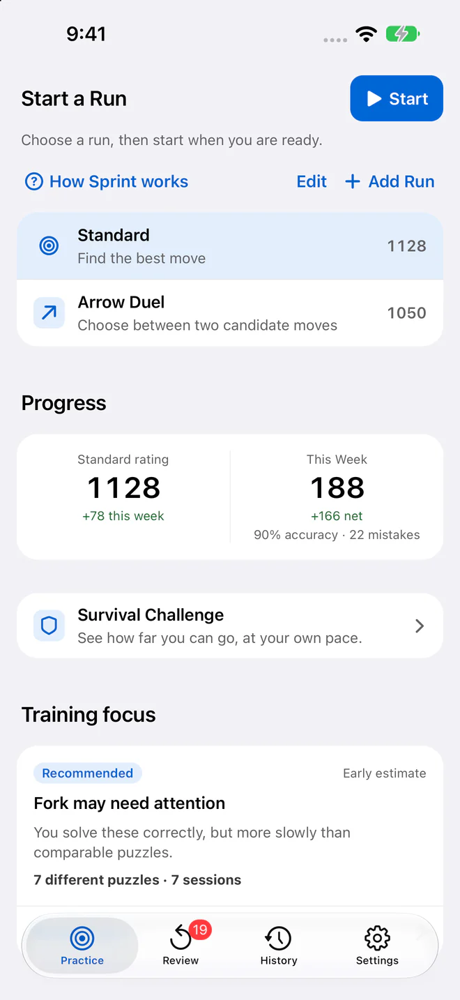
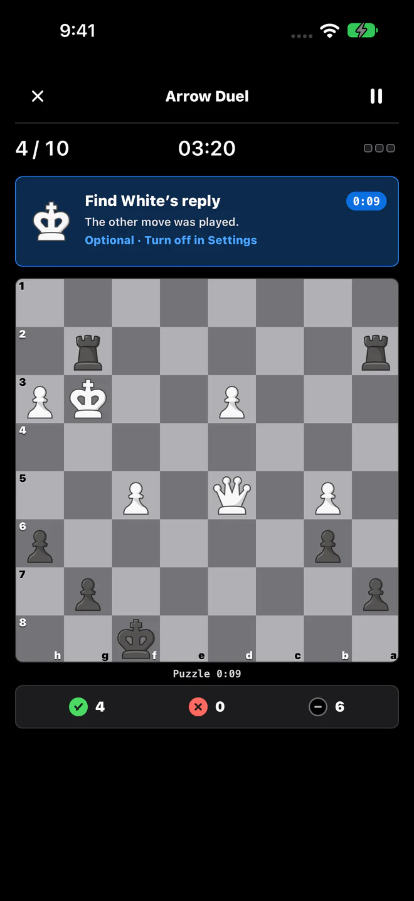
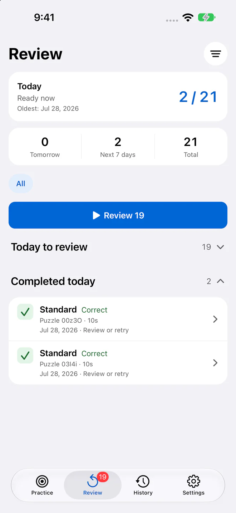
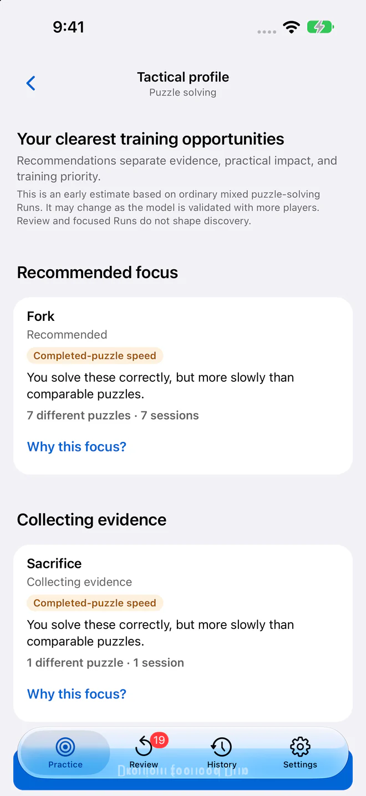
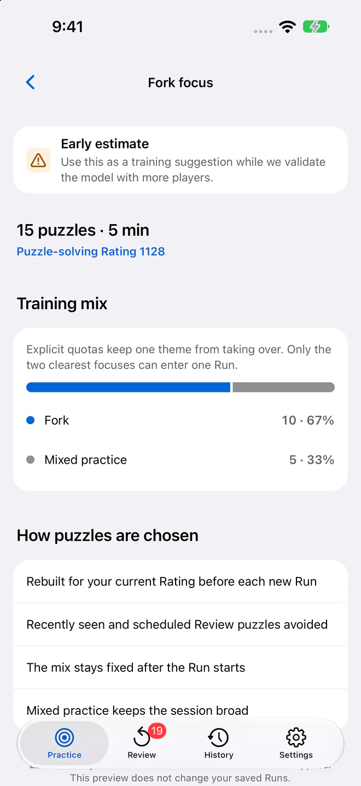
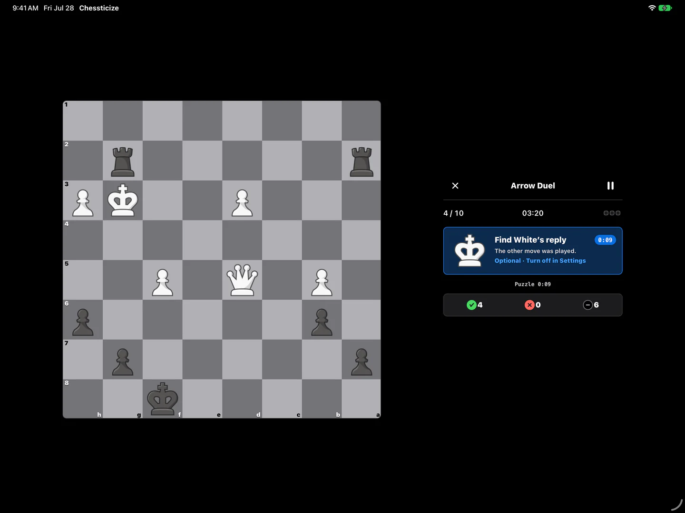
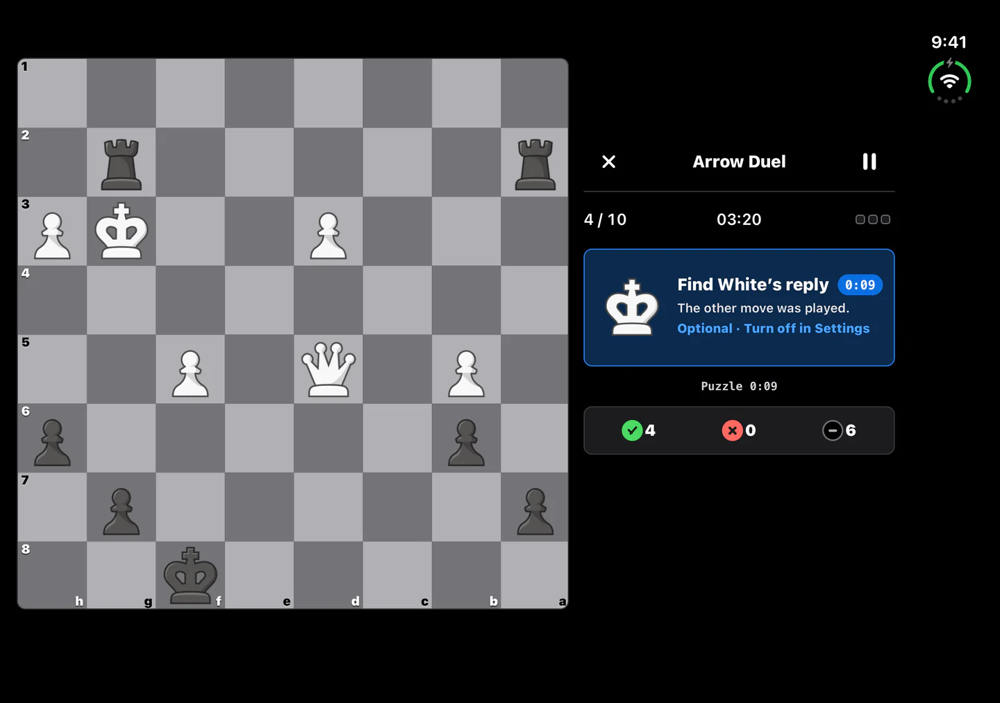

Chess puzzles for focused practice.
Solve short, rating-matched puzzle Sprints. Compare moves in Arrow Duel, then revisit missed puzzles with scheduled Review.
Free. Offline. No ads or account.



Scheduled Review brings back the puzzles worth another look.
Missed and unclear puzzles come back when they are due. Replay a position freely when you want to see the line again without changing its Review schedule.

Focused Runs start with an early estimate, then your choices.
Preview a Focused Run from an early estimate in your Tactical Profile, or choose the themes, pace, and difficulty yourself.


Private practice with more room for the board.
Chessticize works offline on mobile with no ads or Chessticize account. On iPhone and iPad, optional private iCloud Sync can keep your progress together across your Apple devices and can be turned off at any time.

